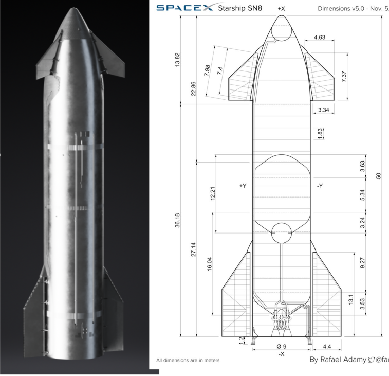
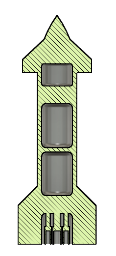
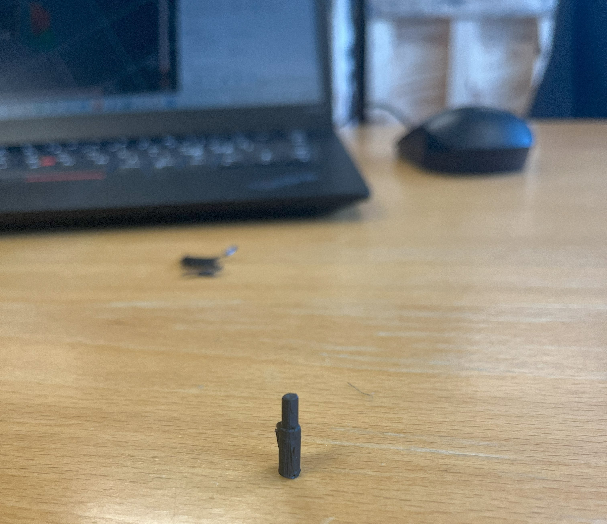
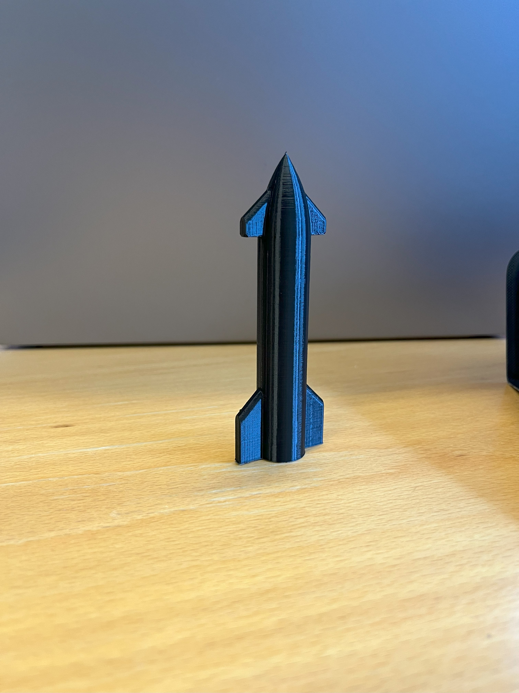
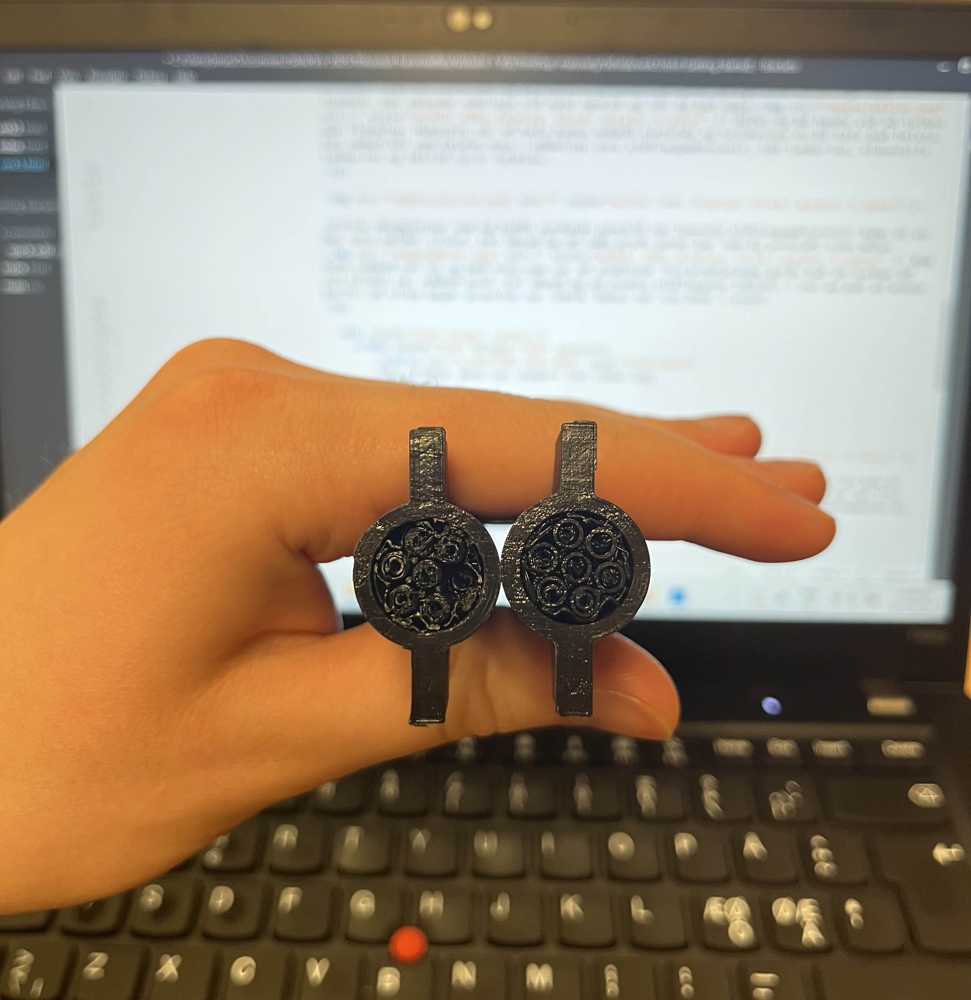
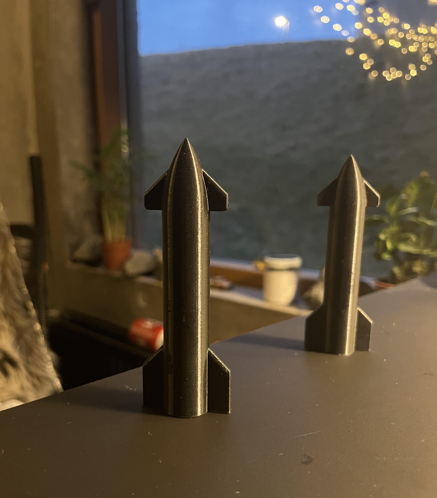

Verkefni 3
Jónas Grétarsson.
Fyrsti hluti verkefnisisn var að prófa 3d skönnun á einhverjum hlut. Til að byrja með hlóð ég niður appinu Polycam, skráði mig inn og hófst svo handa. Byrja þurfti á því að finna hlut og eftir smá göngu um Vr2 fannst Populær Mekanik blað í gefins kassanum. Honum var stillt upp í á borði í stofu 156 og hófst svo myndatakan. Smáforritið er einfalt í notkun og líkist því að taka upp myndband. Passa þarf bara að svipað magn af myndum séu teknar til þess að fá góða heildar skönnun. Af myndbandinu að neðan má sjá afraksturinn.
Seinni hluti verkefnisis snérist um að teikna hlut og prenta hann svo út. Skilyrðin voru hinsvegar að hluturinn verði að vera þannig að ekki sé hægt að útbúa hann öðruvísini en með 3d prentara. Til að byrja með var hugmyndinn að gera tvöfaldan pendúl enda mikill óreiðarkenningar maður (e. Chaos theory). Hugmyndin var svo að gera lattice strúktúr í miðri súlu. Vandamálið var hinsvegar að þegar þetta fór inn í Prusa slicer virtist hann ekki geta lesið skránna almennilega og lattice strúktúrinn hvarf. Á svipuðum tímapunkti áttaði ég mig á því að þetta verkefni hentaði frekar fyrir lokaverkefnið. Svo vildi til að um kvöldið datt ég inná streyi þar sem SpaceX var að koma geymförum upp í alþjóðlegu geymstöðina Crew-10. Með streymið á kanntinum var líkan af Starship. Næsta skref var að finna upplýsingar um mál eldflaugarinnar sem reyndist erfit. Á heimasíðu SpaceX var einungis hægt að finna hæð og þvermál. Á myndinni að neðan má sjá einu teikningar sem fundust. Þær pössuðu sæmilega við mynd SpaceX og lét ég það duga. Hófst ég þá handa við að teikna upp flaugina. Hugsunin var að hafa hanna nokkuð einfalda og stílhreina en þó hafa það helsta. Þau smáatriði sem haldin voru í módelinu voru eldflaugamótoranir, LOX tankurinn, eldsneytis tankurinn og hólfið fyrir farminn.
Til þess að læra á Prusa Slicer og það helsta tengt 3d prentun horfði ég á þetta myndband frá kennara og dugaði það til þess að geta prentað. Þegar módelið er komið þar inn og allar stillingar eru réttar þarf einungis að hlaða g kóðanum á minnislykil með sd korti, stinga því inn í prentaran, velja skránna og er módelið svo prentað í kjölfarið. Einu áhyggjurnar sem ég hafði varðandi prentið var hvernig eldflaugamótorarnir kæmu út en þær voru heldur litlar. Því ákvað ég að taka prufu prent þar sem ég prentaði einn mótor  Kom hann nokkuð vel út og það eina sem var að stoðirnar frá prentaranum gerðu það að verkum að ein hliðin var nokkuð gróf. Því ákvað ég að prenta eldflaugina lóðrétt í von um það að minna þurfti að slípa þegar prentinu var lokið. Henni var svo hent í prent.
Lokaafurðin var svo þessi
Hún kom nokkuð vel út og var ég sérstaklega sáttur með það hversu vel skrokkurinn kom út og var alveg sléttur við það að prenta hana lóðrétt. Það eina sem misheppnaðist var að illa gekk að koma stoðunum við mótorinn undan. Þetta var vegna þess að neðsli hluti skrokksins og mótorana flúttuði ekki. Það sem prentið notaði innan við 18g ákvað ég að breyta módelinuþannig að þetta flúttaði og prenta svo aftur. Hér má sjá útkomuna.
Við það að láta þetta flútta varð þetta talsvert betra en ennþá eru stoðirnar að trufla. Eftir á að hyggja hefði mögulega verið sniðugra að prenta stærri módel og væri þá mögulega auðveldara að hreinsa það af stoðunum eftir á.
